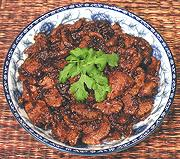

|
Pork with Garlic & PepperThailand | ||||
| Serves: Effort: Sched: DoAhead: |
2 main ** 45 min Yes |
Thais liked their food "spicy" even before the Portuguese brought chili peppers from the New World. With this recipe you can enjoy the pre-chili style, but see Comments. | |||
|
14 20 2-1/2 4 1/4 1 2 |
oz cl t T c T T |
Pork Garlic Peppercorns, black Oil Soy Sauce, black (1) Palm Sugar (2) Fish Sauce (3) |
Prep
|